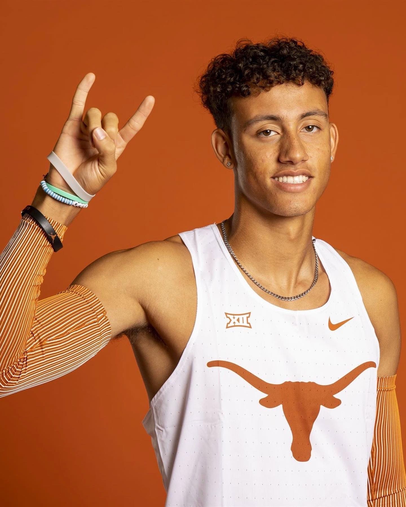
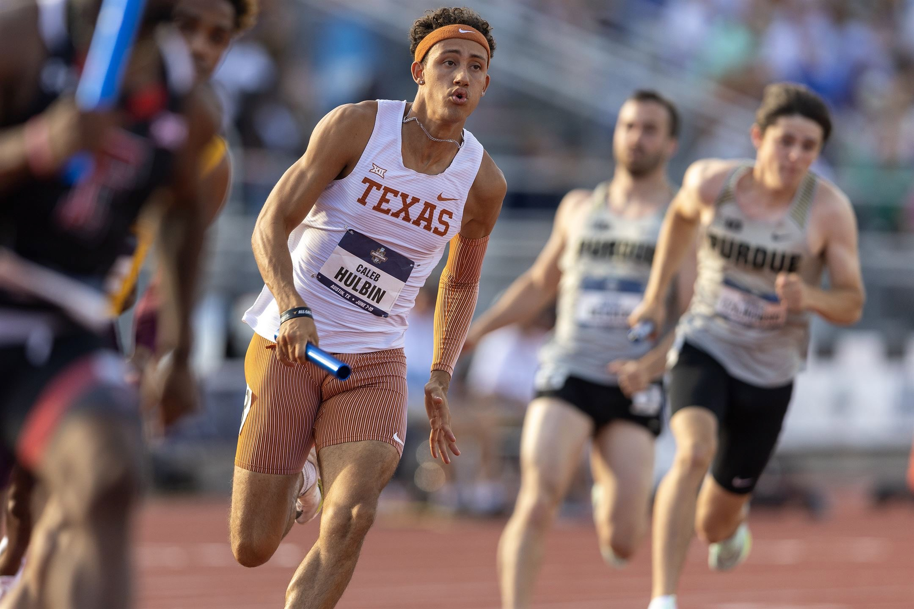
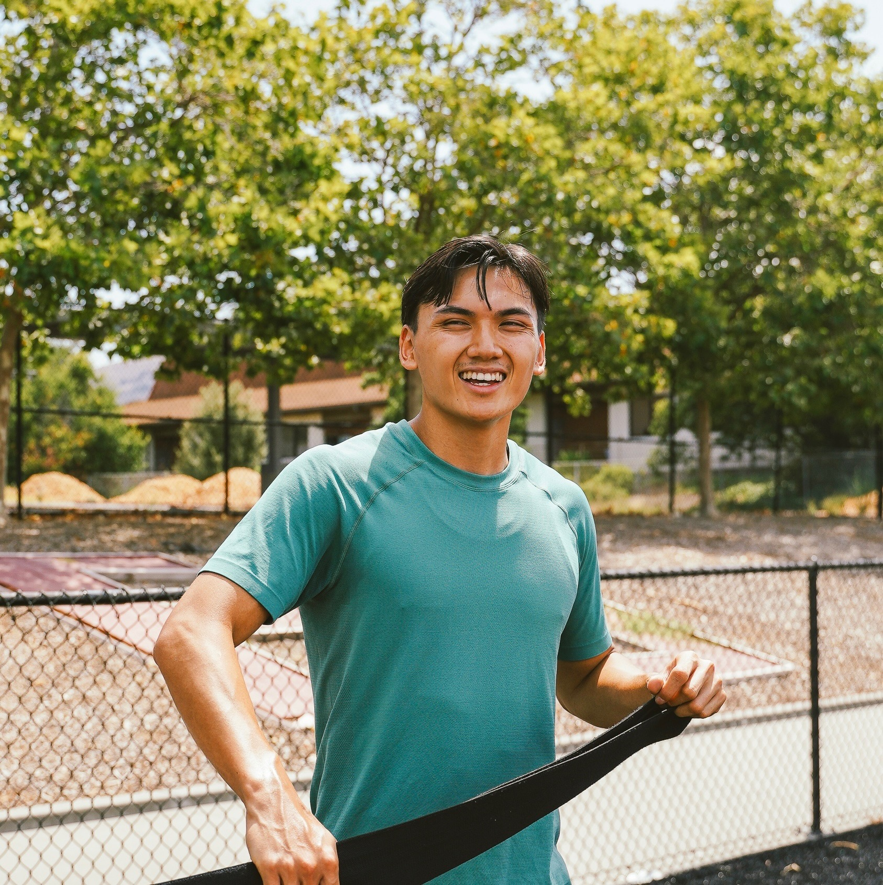

Youth Athletes
Develop for sport and life.
Track-based coaching that complements school programs through disciplined work, technical development, and intentional recovery.
Explore Youth TrainingOdyssey Track Club
Professional track and field coaching designed to develop disciplined athletes, confident leaders, and lifelong ownership.
Choose Your Path
Odyssey develops speed, strength, resilience, and ownership through purposeful coaching. Start with the pathway that fits your goals.
Youth Athletes
Track-based coaching that complements school programs through disciplined work, technical development, and intentional recovery.
Explore Youth TrainingAdult Performance
A consultation-led pathway for former athletes and active adults seeking coached progression, accountability, and resilient performance.
Pilot schedule and membership details are being finalized.
View Application InformationOur Philosophy
Odyssey Track Club prepares athletes to compete with confidence, train with purpose, and eventually take ownership of their own development.
The Odyssey Standard
Weekly Training Schedule
Odyssey Track Club meets three days per week. These sessions are designed to supplement—not replace—an athlete’s high-school program, school-issued workouts, or independent training responsibilities.
Practice Location
Marshall Middle School — Mueller
All Odyssey Track Club practices are currently held at this location.
Monday
6:00 PM–7:30 PM
A group interval session where athletes follow the prescribed workout alongside the coaching staff. The focus is pacing, resilience, effort, and disciplined execution.
This session may be adjusted when an athlete’s school program has already assigned substantial interval work.
Friday
6:00 PM–7:30 PM
Led by Coach Dawson, Friday focuses on acceleration, maximum velocity, sprint mechanics, plyometrics, and event-specific speed development.
The goal is to complement the athlete’s existing program through high-quality technical work—not simply add more volume.
Saturday
8:00 AM–9:30 AM
Athletes learn how to recover with the same intention they bring to training. Sessions may include mobility, flexibility, breathing, movement quality, regeneration, and recovery education.
The purpose is to help athletes remain healthy and consistent while managing school practices, competition, and independent workouts.
Odyssey does not exist to make athletes dependent on constant supervision. We provide three purposeful sessions each week. The days between them are where athletes practice ownership through their school program, assigned workouts, sleep, nutrition, recovery, and individual responsibility.
Odyssey is a supplement to the athlete’s broader development—not a replacement for every other part of it.
Youth Membership
Every youth plan is built on the same Odyssey standard. Choose recurring training days at enrollment, subject to session capacity. Those selected days are the membership entitlement and are not unrestricted credits.
Youth 1 Day
$100/month
1 recurring selected training day per week
For school-program athletes who need one purposeful weekly supplement.
One purposeful weekly session. Build the habit.
Apply for Youth 1 DayMost Popular
Youth 2 Days
$150/month
2 recurring selected training days per week
For athletes balancing speed, strength, or recovery needs.
Two coached touchpoints for consistent development.
Apply for Youth 2 DaysYouth 3 Days
$200/month
3 recurring selected training days per week
For athletes seeking the full Odyssey weekly experience.
Complete weekly coaching across work, speed, and recovery.
Apply for Youth 3 DaysSelected training days are chosen during enrollment and depend on session capacity. They are recurring membership entitlements, not unrestricted credits.
Meet the Coaches


Sprint Coach
3× First Team All-American · 3× Conference Champion · National Champion
O.D.A.C. is more than a coaching philosophy—it's the standard I strive to live by every day. Outside of coaching, I work as a Private Wealth Management Advisor, where I've learned that sustained success is built through discipline, responsibility, and consistent execution.
Those lessons carry directly into the way I coach. My goal isn't just to help athletes run faster; it's to equip them with the character, habits, and mindset that will serve them long after their athletic careers are over. At Odyssey, we believe we're building great people first—and exceptional athletes as a result.


Strength & Mobility Specialist
Certified Strength & Conditioning Specialist (CSCS)
Coach Dawson Dinh specializes in strength, mobility, speed development, and long-term physical preparation. His work at Odyssey is focused on helping athletes become stronger, more resilient, and better prepared to express speed safely and consistently.
Dawson assisted the University of Texas Athletic Performance staff from 2023–2025, supporting Olympic Sports as well as Men's and Women's Basketball. He earned his bachelor's degree from The University of Texas and a Master of Science in Kinesiology from Texas A&M–Corpus Christi.
His experience includes high school, collegiate, professional, and general-population athletes, along with return-to-play development and multi-sport performance training.
Frequently Asked Questions
Youth 1 Day provides one recurring coached day each week, Youth 2 Days provides two, and Youth 3 Days provides three. Odyssey will confirm selected training days during enrollment, subject to session capacity.
No. Odyssey is designed to supplement an athlete's school program, school-issued workouts, and independent training responsibilities.
Current sessions meet at Marshall Middle School — Mueller: Monday and Friday from 6:00 PM–7:30 PM, and Saturday from 8:00 AM–9:30 AM.
No. Days are recurring selections made at enrollment, subject to session capacity. They are the membership entitlement, not unrestricted credits.
Adult Performance is a consultation-led pilot pathway for former athletes and active adults. Its schedule, capacity, membership details, and enrollment timing are still being finalized.
Use the application link below to open Odyssey's current Google Form in a new tab. Submitting the form expresses interest in Odyssey; it does not confirm a membership plan, selected training days, or an Adult Performance consultation.
Begin Your Odyssey
Odyssey currently collects applications through Google Forms. The form opens in a new tab and is separate from the Athlete Portal.
Open the Odyssey Application (new tab)Adult Performance enrollment and consultation details will be shared after the pilot schedule and membership structure are finalized.